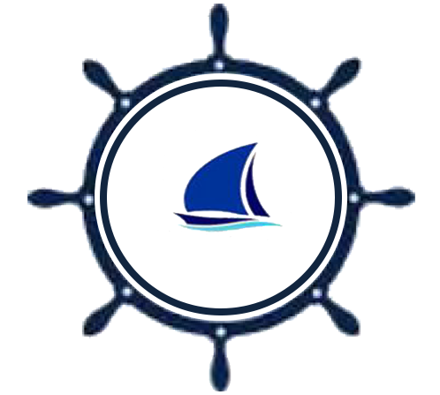

01 / MARINA
Marina Services
Berthing facilities and personalized marina service in the Port of Los Angeles.
EXPLORE MARINA SERVICES ↗
CERRITOS YACHT ANCHORAGEGenerations of family ownership. A commitment to honest service. A place where your vessel is treated with care.
For generations, Cerritos Yacht Anchorage has been part of the fabric of the Wilmington boating community.
Located along the Cerritos Channel in the Port of Los Angeles, our independent, family-run marina and boatyard combines hands-on service with a deep understanding of what it means to care for a vessel.
We believe in personal relationships, honest work, and treating every boat as if it were our own.
GET TO KNOW US →
Our story began in the 1940s, when Ed Rimkus, known to everyone as Eddie, and his father helped build the marina property in Wilmington.
Eddie and his wife established a small marina and boatyard, creating a business rooted in the local boating community. Their daughter JoAnn continued that work, eventually passing the business to the next generation.
Today, the marina reflects the work and dedication of four generations of family members. The name Eddie's Marine Service remains a tribute to the grandfather whose vision helped start it all.
From everyday marina needs to specialized boatyard work, our team is here to help.
Berthing facilities and personalized marina service in the Port of Los Angeles.
EXPLORE MARINA SERVICES ↗Haul-out, launching, maintenance, and repair services for your vessel.
EXPLORE BOATYARD SERVICES ↗Bottom maintenance and painting services to help care for your boat.
LEARN MORE ↗A well-equipped facility makes a difference. Our marina offers amenities designed to support the needs of boat owners.
Interested in berthing at Cerritos Yacht Anchorage? Contact our team to learn more about availability and application requirements.
BERTH INFORMATION & APPLICATION ↗The relationships we build with our boating community are at the heart of everything we do.
The most honest and friendliest shop, Mike is an awesome guy very thorough and will work with your time and budget. They are on time with their schedules, he gave me so much advise for my boat and he personally drove me to my slip on a Saturday. He goes above and beyond. Don’t hesitate to talk to him and he will get the job done.
I had to put in a transducer in my boat and my expeirence from start to finish was excellent. The secretary (Kendal) was very informative and answered all my questions and concerns. I brought the boat in and they did a clean professional job. I would use them again without question. Lupe and his brother were always there to answer any questions or lend a hand when I needed it. Five star’s for a little mom and pop boat yard.
I Had Eddies haul out my 35 sailboat to do a bottom job, replace thru hulls, ball valves and install a tranducer. All i can say about Eddies marine is that they are the best and most honest boat yard in the Long Beach area. Lupe and his crew did a perfect job, on time and correct. The final cost was right on target from the bid Mike the owner origannaly quoted me. I did have them do a few other things and all of the extras although not in my original bid were priced very fair. Thanks Mike, Lupe and the crew at Eddys for renewing my faith in the boating community that you can still get high quality work done at honest and fair price on boats in the LA Area.
Very happy with the service i received. mike is a great person and easy to work with. i am in the process of restoring my 1976 uniflite sport fisher… when it comes to boat repairs you definitely get what you pay for, this shipyard performs quality work at a fair price. the marina is well maintained and i received a great slip here. happy to find this place and great front office service as well. highly recommend!
I love this marina, they are very professional and down to earth. Security is great, you couldn’t ask for nicer people who understand boats and the challenges that can arise out of nowhere, when owning a boat. I highly recommend Cerritos Yacht Anchorage, two big thumbs, Way, Way up!!!
Whether you're looking for a berth or need boatyard services, our team looks forward to hearing from you.